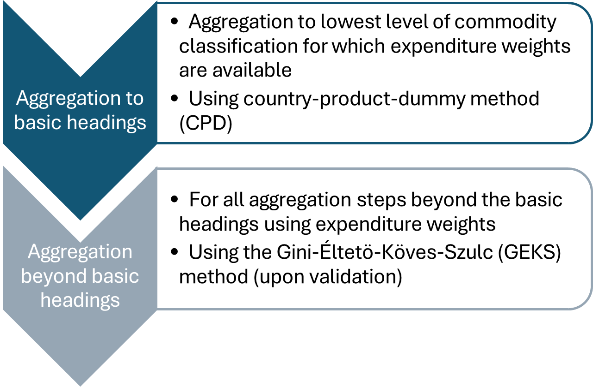

Overview
Methodology
This vignette provides a fully documented production pipeline, describing the data, processing, validation, aggregation and estimation of the multiple data sources for the purpose of constructing subnational PPPs in the testing countries. Data processing, validation, aggregation, and estimation follow the international recommendations whenever applicable (Bank 2013; European Union/OECD 2024; ICP 2021).
In particular, the CPD-GEKS approach is recommended for producing subnational PPPs by the ICP (ICP 2021), and has also been used by Istat, Italy’s National Statistical Office, that produces experimental subnational PPP statistics (Istat 2026).
Upon validation of the raw data,1 the approach follows a two-step procedure (Figure 1):
Estimation of price parities at the basic-heading level using the regional extension of the Country-Product-Dummy (CPD) method (Summers 1973). Basic-heading aggregation with CPD is recommended by the ICP (ICP 2021) as it is better-suited to handling missing price observations in the underlying price microdata than GEKS (Auer, Ludwig von 2026).2
Aggregation of BH-level parities into higher-level indices using the Gini-Éltetö-Köves-Szulc (GEKS) method, a multilateral index construction technique that ensures transitivity, in combination with household final consumption expenditure data as a weighting structure for household final consumption PPPs (ICP 2021).

To seamlessly combine the two estimation steps, OECDsppps provides the option to impute missing basic-heading subnational PPPs. A complete stylised workflow is described in section Putting it all together.
The complete implementation pipeline
OECDsppps is available in R, but section Alternative Software discusses how the package can be integrated into a Python or SAS workflow.
The implementation pipeline covers the country-level data validation, the aggregation and estimation of subnational Purchasing Power Parities and the harmonisation of these estimates to make sPPP indicators comparable across countries (Table 1). The individual steps are described below in more detail.
Only the raw data validation, which derives a standard structure across all testing countries, remains country- and dataset-specific. The individual stages of the production pipeline are discussed in the subsequent paragraphs, together with the various functions used for the calculation of the subnational price indices.
| Steps | Counterpart |
OECDsppps integration |
|---|---|---|
| 1 Raw data processing | OECD or country | - |
| 2 Raw data validation | OECD or country |
valid_pot(), valid_apt(), valid_ratio_xr(), valid_ratio_ppp(), valid_est()
|
| 3 Estimation at basic-heading level | OECD or country |
estim_cpd(), estim_index_link()
|
| 4 Validation of estimation at basic-heading level | OECD or country |
valid_dikhanov(), valid_outlier_plot()
|
| 5 Estimation beyond the basic-heading level | OECD |
index_laspeyres(), index_paasche(), index_fisher(), index_geks()
|
| 6 Validation of estimation beyond the basic-heading level | OECD |
valid_outlier_plot(), valid_pls()
|
1 Raw data processing
The objective of the raw data processing is to derive a standard structure across all testing countries. Data are sourced primarily from official CPI programmes of National Statistical Offices (NSOs) and are country-specific. Consequently, data cleaning is country- and data-specific, and is typically the most time-consuming part of the initial data work, as data can be available at different levels of granularity (spatial and product-related), content (available variables and information), and coverage (e.g., products, types of activity, etc.).
The data processing takes the raw (unprocessed) CPI microdata. It ensures that product characteristics, as well as the observed quantities and measurement units of the observed price quotes, are harmonised, enabling a like-for-like comparison of products across regions. See Table 2 for a stylised example based on (Weinand and Auer 2020).
| Region | Outlet | Quantity observed | Measurement unit of observed quantity | Product characteristics | Price observed |
|---|---|---|---|---|---|
| A | Supermarket | 1 | Kilograms | “Bens, basmati, bag” | 1.69 |
| C | Supermarket | 500 | Grams | “Ben’s, basmati, bulk” | 0.79 |
| B | Supermarket | 0.5 | Kilograms | “Ben, basm., bulk” | 0.69 |
In addition to harmonising the individual price quotes, initial data processing also classifies the individual items or products according to their respective COICOP subclasses. Once a common structure is established, harmonised data processing using OECDsppps commences with the data validation.
2 Raw data validation
Data validation is carried out to confirm the validity of price statistics at various levels of aggregation, from the initial item-level price quotes to the basic-heading level and upwards, as well as comparing household expenditure weights across regions.
Validation begins with analysing item-level prices within regions and involves outlier detection of single price quotes and average price aggregates. The two validation steps taken at this stage are described in the Validation vignette:
- Intra-regional validation analyses individual and aggregate price quotes within the same region and across regions of the same country.
- Inter-regional validation performs prices validation across all regions and countries, ensuring that average prices are based on comparable products in regions across countries and that products have been accurately priced.
The raw data validation of alternative data sources is also carried out at this stage.
Functions used at this stage are: valid_pot(), valid_apt(), valid_ratio_xr(), valid_ratio_ppp(), valid_est().
3 Estimation at basic-heading level
The first step is the estimation of basic headings using item-level prices. There, price data are aggregated up to the level of basic headings, generally without the use of expenditure weights.
This first estimation step is carried out using estim_cpd() with argument output = "Full", which summarises the key information of the estimated CPD model. It provides the ‘Regression output’ as well as the individual ‘Residuals’ of the CPD regression; see Example 4 in the Estimation vignette.
4 Validation of estimation at basic-heading level
Validation at the basic-heading level concerns the reliability of the CPD estimates as well as their cross-sectional comparability. The numerical validation is carried out using Dikhanov tables, and the visual validation is done by way of plotting.
Functions used at this stage are: valid_dikhanov(), valid_outlier_plot().
5 Estimation beyond the basic-heading level
5.1 Data preparation for index calculations
CPI microdata typically does not contain price quotes for all COICOP categories, including the ones for which cross-regional uniform prices can be assumed, such as, for example, for used cars. However, removing products that are subject to uniform prices from the estimation will artificially inflate the price variation for any present category. Consider the example where a generic COICOP class contains 10 sub-classes, of which 9 are subject to uniform prices while one sub-class is subject to price variations. If the 9 uniform sub-classes were to be removed from the sPPPs calculation, the remaining sub-class with regional price variation would artificially inflate the price variation of the entire class. It is therefore necessary to artificially include uniform prices for all sub-aggregates contained within the respective higher aggregate for which sPPPs are estimated.
Function estim_index_link() serves as a “link” from the first CPD steps towards the second GEKS step of the index calculation. It combines the CPD estimates with the corresponding household expenditure weights (typically at the basic-heading level corresponding to the 4-digit COICOP classes) and identifies missing CPD-price-household-weight pairs. It also provides the option to fill in missing basic-heading PPPs with a value given by the user, thereby producing a complete CPD-price-household-weight matrix, which is needed for the second GEKS aggregation step.3
5.2 Index calculations
The Gini-Éltetö-Köves-Szulc index (GEKS) method is recommended for aggregating above the basic-heading level for international and inter-regional comparisons, as it satisfies the necessary properties for multilateral comparisons. It corresponds to the geometric average of the Fisher index, which, in turn, incorporates the Laspeyres and the Paasche index.
Functions used at this stage are: index_laspeyres(), index_paasche(), index_fisher(), index_geks().
6 Validation of subnational PPPs beyond the basic-heading level
Two validation functions are used for validation of subnational PPPs beyond the basic-heading level:
-
valid_outlier_plot(), which produces some simple validation plots to check subnational PPP estimates for potential outliers -
valid_pls(), which calculates the Paasche-Laspeyres spread (Hill 2011).